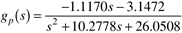

| 1: | Consider the case 2 operating point, Fs/V = 2.8744 min-1. Show that the steady-state concentrations are CAs = 6.0870 mol/liter and CBs = 1.117 mol/liter.
Find the resulting state space model and verify that the manipulated input-output process transfer function for this operating point is 
Find the gain-time constant form for this transfer function. Show that a P controller (with the correct sign on the controller gain) cannot destabilize this process unless there are additional measurement and valve lags. Use the Routh stability criterion.
|